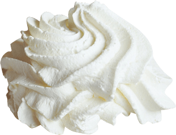
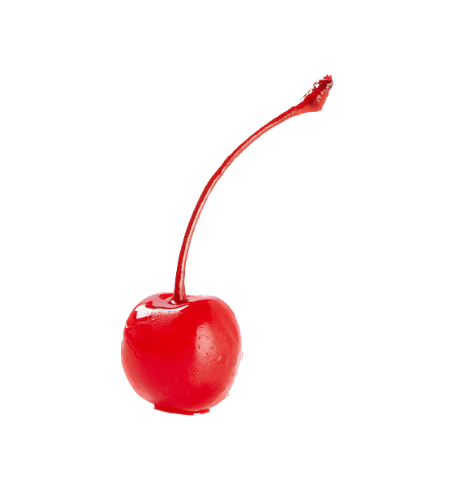
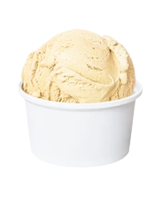

Homemade Vanilla Ice Cream
Click on the toppings to add them to your ice cream!
  - 1 (14 ounce) can sweetened condensed milk
- 1 pint heavy cream
- ½ cup cold milk
- 1 tablespoon vanilla extract
- ⅛ teaspoon salt
- 1 pack of 12 cones
- And your favorite toppings!
Ingredients
- Stir milk, cream, and sugar in a saucepan over low heat until sugar has dissolved. Heat just until the mixture is hot and a small ring of foam appears around the edge.
- Transfer cream mixture to a pourable container such as a large measuring cup. Stir in vanilla extract and chill mix thoroughly, at least 2 hours. (Overnight is best.)
- Pour cold ice cream mix into an ice cream maker, turn on the machine, and churn according to manufacturer's directions, 20 to 25 minutes.
- When ice cream is softly frozen, serve immediately or place a piece of plastic wrap directly on the ice cream and place in the freezer to ripen, 2 to 3 hours.
- (Optional) When serving put in a cone and top with your favorite toppings.